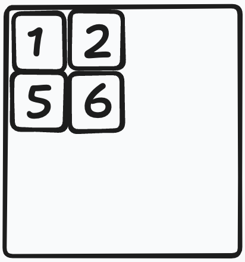
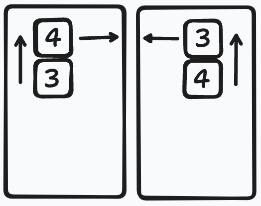
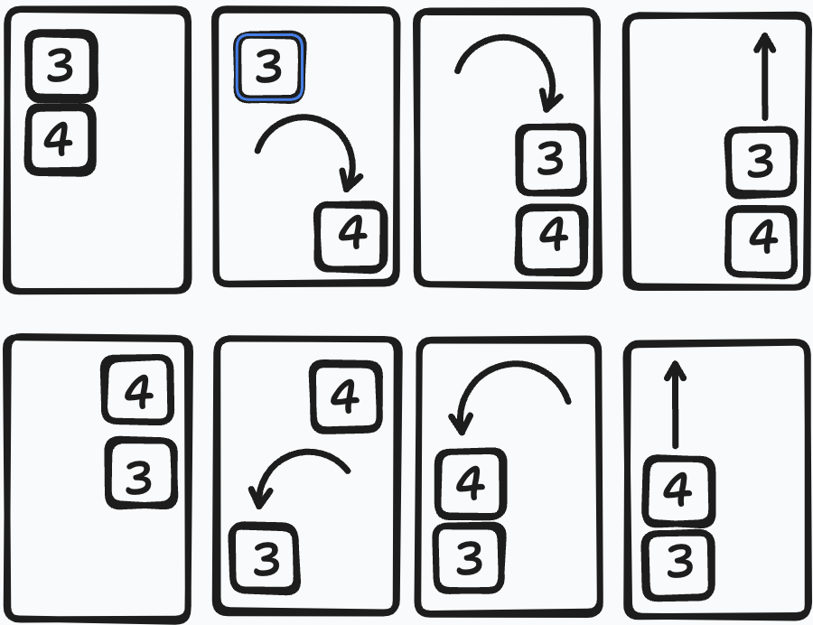
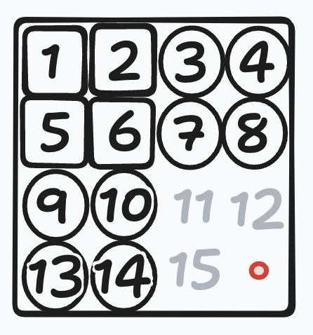

15 Puzzle
In this puzzle we have a 4x4 grid and 15 tiles labeled 1 to 15. We use the remaining empty space to move the tiles. The objective is to place the tiles according to a numerical order (which is not always possible).
Let's talk about a possible solution strategy. We can easily place 1,2,5 and 6 in their correct positions.  We need to be a little bit careful about the rest of the tiles. For example we can not simply put tile 3 in its correct place first and tile 4 later. We are going to put tiles 3 & 4 in one of the following positions then we can place them in their positions.  Suppose that tiles 3 & 4 are not in one of these positions, then we can assume that they are in one of the following positions: 1. they are on the left and 3 is on top or 2. they are on the right and 4 is on the top. Consider 2x3 sub-grid containing these tiles, note that there are two 2x2 sub-grids: top and bottom.  First consider the bottom 2x2 sub-grid and rotate clockwise direction (anti-clockwise direction in the second case). We repeat the same rotation operation in the top 2x2 sub-grid. We can push tiles 3 & 4 up, this way we end up the desired positions.
It easy to see that we can repeat these operations for the tiles 7 & 8 as well. Then we are going to consider tiles 9 & 13 (resp. tiles 10 & 14) and apply the same operations in 90degree rotated fashion. 
We can easily place the remaining tiles 11, 12 and 15, of course if the puzzle is solvable. We need to show that if we can not solve the puzzle with this strategy, then the puzzle is not solvable (with in any strategy).